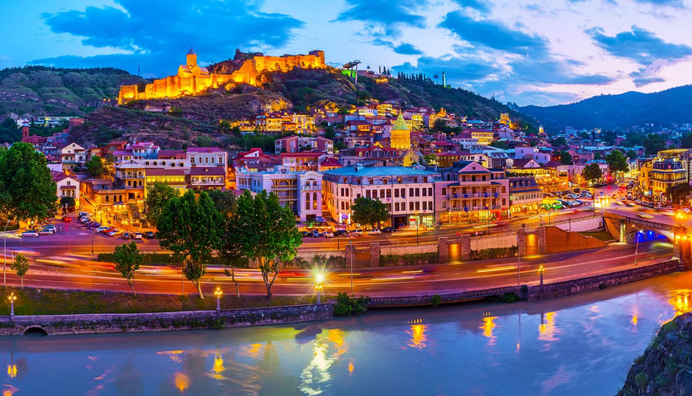
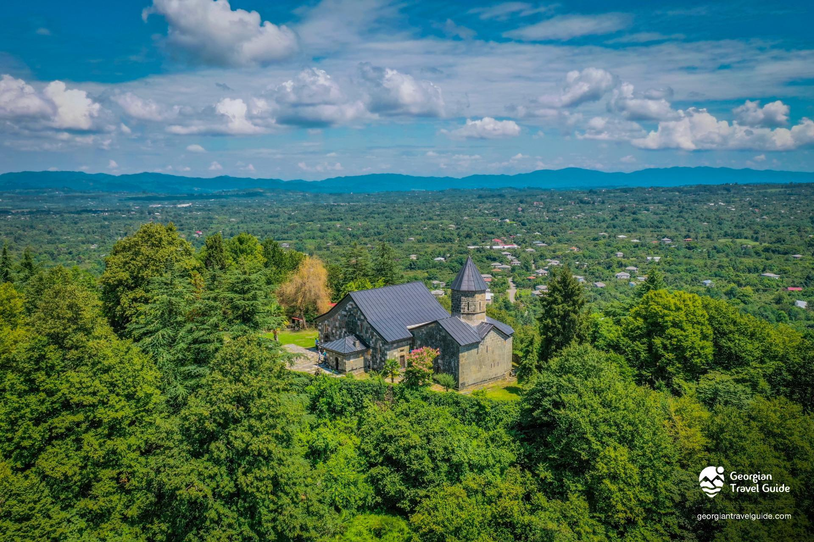
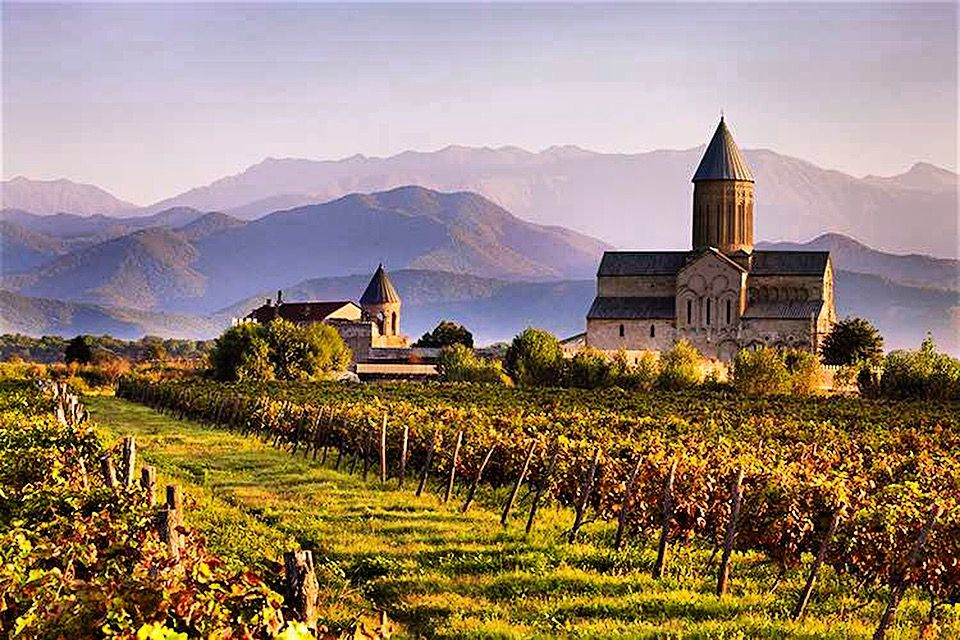
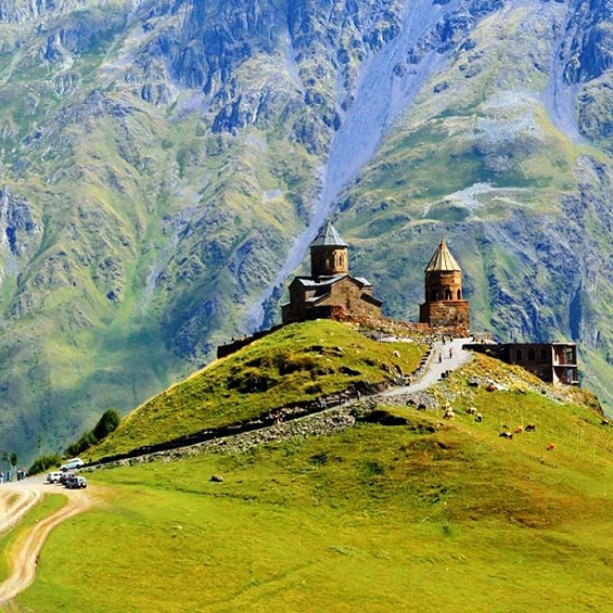
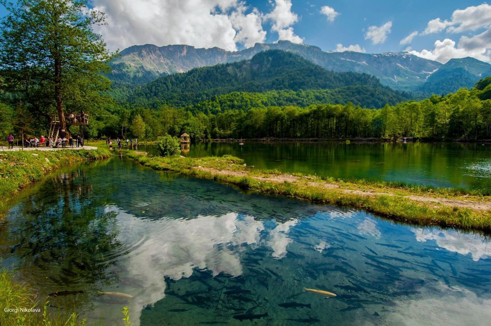
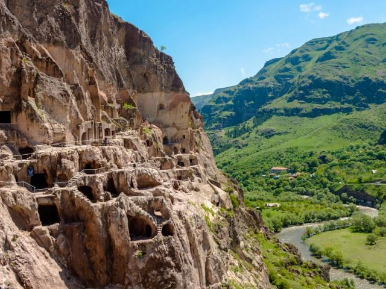

თბილისი
დედაქალაქი, ძველი უბნები, გოგირდის აბანოები და თანამედროვე არქიტექტურა ერთ ხედში.
მცირე ჯგუფური მოგზაურობები
ჩვენ ვგეგმავთ მარშრუტებს არაუმეტეს 8 კაციან ჯგუფებში — მთის სოფლებიდან ევროპულ ქალაქებამდე — ისე, რომ დრო არასდროს დარჩეს ავტობუსში, გატარებული სანახავზე მეტ ხანს.
ჩვენი მიდგომა
ყოველი მარშრუტი შედგენილია იმ ადამიანების მიერ, ვინც ამ ადგილას ცხოვრობს ან წლების განმავლობაში დადის იქ რეგულარულად. აქედან გამომდინარეობს ის, რასაც გთავაზობთ: ნაკლები გაჩერება, მეტი დრო თითოეულ ადგილას.
ვეხმარებით მხარის მიხედვით — რაჭიდან აჭარამდე, კახეთიდან სვანეთამდე.
მარშრუტს ვარგებთ ჯგუფის ტემპსა და სეზონურ პირობებზე.
ლოგისტიკა, ღამისთევა და გიდი უკვე მოგვარებულია თქვენს გარეშეც.
მიმართულებები

დედაქალაქი, ძველი უბნები, გოგირდის აბანოები და თანამედროვე არქიტექტურა ერთ ხედში.

ბათუმი და შავი ზღვის სანაპირო, სუბტროპიკული ბუნება.

მწვანე ბორცვები, ჩაის პლანტაციები და მშვიდი სოფლური პეიზაჟები.

ქუთაისი, პროშუთეთის მღვიმეები და ოკაცეს კანიონი.

ღვინის რეგიონი, ალაზნის ველი და კავკასიონის ხედები.

ძველი დედაქალაქი მცხეთა, ჯვრის მონასტერი და ყაზბეგის მთები.

მაღალი მთები, ტყიანი ხეობები და ცნობილი ხვანჭკარას ღვინო.

მარტვილის კანიონი, სვანური კოშკები და მდინარეების ველური ხეობები.

ვარძიის კლდეში ნაკვეთი ქალაქი და ვულკანური პლატოს ტბები.

დავით გარეჯას სამონასტრო კომპლექსი და ნახევრად უდაბნოს პეიზაჟები.

გორის ციხე, უფლისციხის კლდეში გამოკვეთილი ქალაქი.
დაგეგმვის დახმარება
აირჩიეთ მიმართულება — მონაცემს პირდაპირ ვიღებთ ღია, უფასო ამინდის სერვისიდან.
იტვირთება…
—
—
—
შთაბეჭდილებები
დაჯავშნა
დაგვიწერეთ, რომელი მიმართულება გაინტერესებთ — 24 საათში დაგიკავშირდებით თავისუფალი თარიღებით.